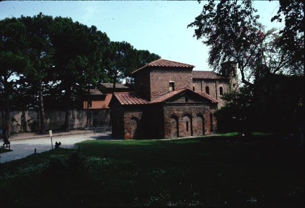
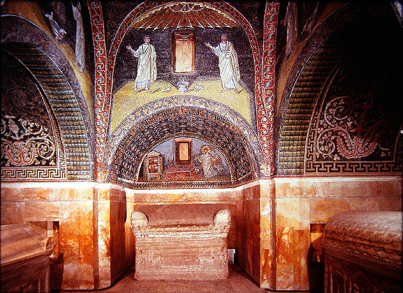
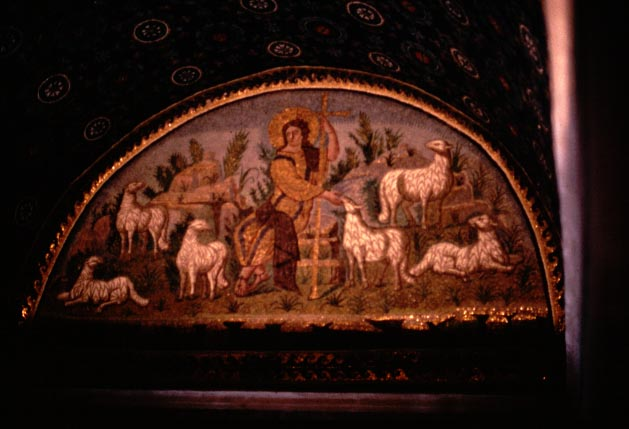
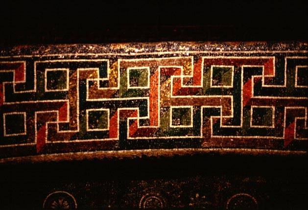

This small structure was built originally as a chapel attached to
the
church of the Holy Cross (which is now a ruin). The church was
founded
by the empress Galla Placidia c. 425-50, and her association with it
led,
in the thirteenth century, to the idea that the chapel had originally
contained
her burial. In fact, Galla Placidia died and was probably buried
in Rome, in 450.

Exterior view, from the south

Interior view, showing sarcophagi and mosaics, looking east

Mosaic of Christ as the Good Shepherd, over the west door

Decorative mosaic-work on the underside of an arch